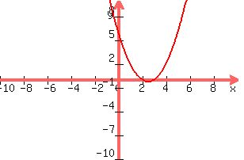

Welcome to Algebra
Algebra helps you understand how numbers, variables, and operations work together. It’s the foundation for most areas of mathematics and is essential for science, technology, and problem-solving in the real world.
What You'll Learn
- Variables and Expressions: Represent unknowns and relationships with symbols.
- Linear Equations and Inequalities: Solve one-step, two-step, and multi-step problems.
- Quadratic Equations: Understand parabolas and the power of factoring.
- Functions and Graphing: Explore how equations represent real-world relationships.
Topic Focus: Solving Quadratic Equations
Quadratic equations are equations of the form ax² + bx + c = 0. They represent parabolas and can be solved in several ways. Let’s go through the most common method — factoring.
Example Problem:
Solve: x² + 5x + 6 = 0
Step-by-Step Solution:
- Identify a, b, and c: a = 1, b = 5, c = 6.
- Find two numbers that multiply to c (6) and add up to b (5): Those numbers are 2 and 3.
- Write factors: (x + 2)(x + 3) = 0
- Set each factor equal to zero: x + 2 = 0 → x = -2 x + 3 = 0 → x = -3
- Check your answers: Substitute x = -2 and x = -3 into the original equation to verify both work.
Final Answer: x = -2, -3

Example of a parabola: y = x² + 5x + 6
Why Algebra Matters
Algebra strengthens your logical thinking and helps you analyze patterns. From coding and finance to architecture and science, algebraic thinking is used everywhere to solve problems and make predictions.